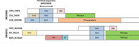
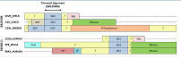
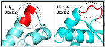
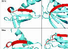

| Problem |
|
Discussion |
Example
click image for details |
|
Most proteins in BALIBASE do not have known structure. |
|
Most BALIBASE alignments were obtained by
sequence methods. In these cases, comparing MUSCLE to BALIBASE is
comparing two different sequence alignment methods. Implicitly, the authors of
BALIBASE are claiming that their sequence alignment methods are so much better
than methods they are testing that they can be used as a gold standard. I'm not convinced.
|
 |
|
Many sets are not globally alignable. |
|
Many of the BALIBASE sets contain proteins that are not
globally alignable because they contain different domains in different orders.
Often, only a single, small domain is common to all proteins in the input set.
Most popular methods like CLUSTALW, MUSCLE, T-COFFEE, PROBCONS etc. are global
aligners that assume the input sequences differ only by small mutations with
no major rearrangements. This assumption is grossly violated by BALIBASE.
|
|
|
Non-homologous regions are aligned |
|
Many sets align regions that are definitively not
homologous or structurally similar.
|
 |
|
Many structural alignments are wrong |
|
Even in regions that have some structural similarity, the
BALIBASE alignments have obvious mistakes according to their own alignment
criteria, e.g. aligning surface loops to buried
core secondary structure.
|
 |
|
Incorrect core blocks |
|
Core blocks should have unambiguously conserved secondary structure
to ensure that structure and sequence alignments agree. In
many cases, they do not.
|
 |